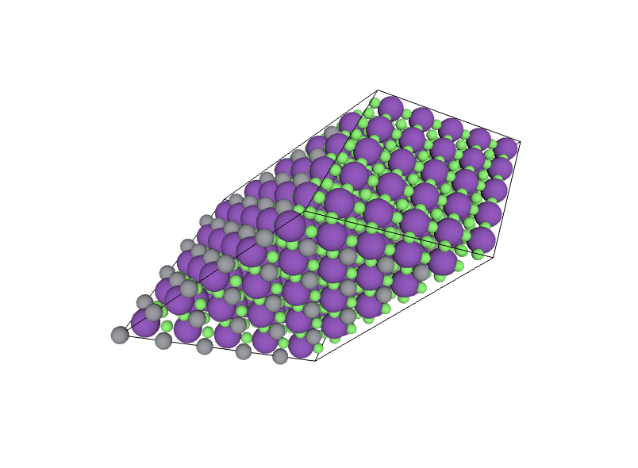
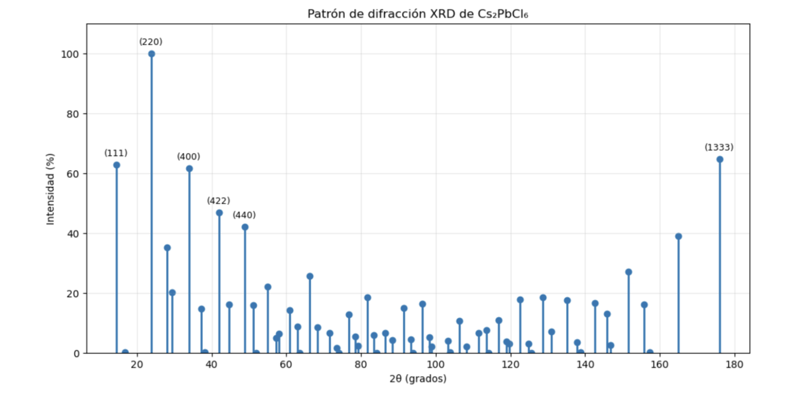
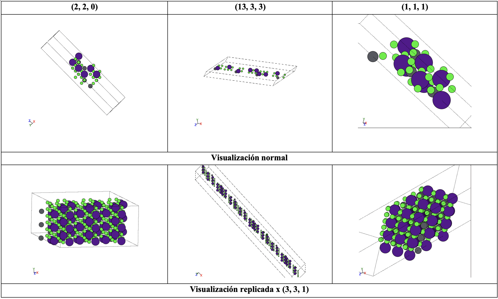
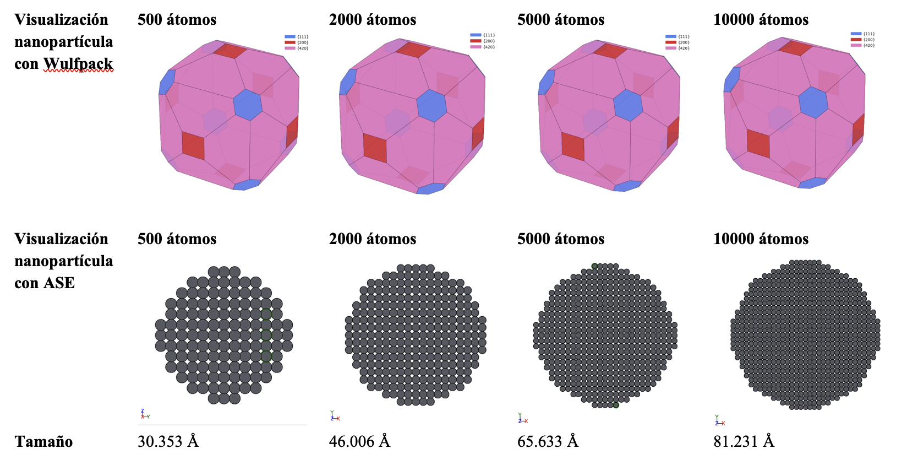

De la química a la luz
¿Qué son las celdas solares?
Efecto fotovoltaico · Estructura de capas · Generaciones
Materiales específicos
Perovskitas halogenadas · Estructura ABX₃ · Comparación Si
Retos generales del área
Estabilidad · Escalabilidad · Toxicidad · Costo · Reproducibilidad
Reto principal
Estabilidad del material · Rol de la química computacional
Un problema de conversión eficiente, no de disponibilidad
El sol entrega más energía en una hora de la que la humanidad consume en un año. El problema no es disponibilidad — es conversión eficiente.
Países líderes y costos de fabricación por tecnología
La creciente demanda mundial impulsa la búsqueda de materiales con mayores eficiencias y menores costos — de ahí el interés en perovskitas solares.
| Tecnología | Potencia | Precio aprox. | COP/W | Estado |
|---|---|---|---|---|
| Silicio PERC (Trina 400W) | 400 W | ~$620.000 COP | ~$1.550/W | Comercial |
| Silicio TOPCon (550W) | 550 W | ~$850.000 COP | ~$1.545/W | Comercial |
| Perovskita (est. investigación) | — | ~$0.25 USD/W* | ~$1.000/W* | Precomercial |
* Estimación de costo de fabricación en laboratorio. No incluye encapsulación, certificación ni instalación. No es precio de venta al consumidor.
Las perovskitas no son más baratas hoy. Su ventaja es el potencial futuro: fabricación en solución a bajas temperaturas.
← Haz click en una etapa para ver el detalle
← Haz click en una capa para ver el detalle
Evolución desde el silicio cristalino hasta las perovskitas
| Generación | Materiales principales | Eficiencia | Band gap | Limitación central |
|---|---|---|---|---|
| 1ª Gen. | Silicio cristalino | ~25–26% | 1.12 eV | Fabricación costosa y energéticamente intensiva |
| 2ª Gen. | Thin Film, silicio amorfo | ~15–22% | 1.0 - 1.7 eV | Toxicidad de Cd, escasez de In y Te, menor eficiencia |
| 3ª Gen. | Perovskitas | hasta ~26%+ | 1.2 – 2.3 eV | Estabilidad, durabilidad, toxicidad del Pb |
| ABO₃ | ABX₃ | |
|---|---|---|
| Estabilidad | Alta | Moderada |
| Absorción visible | Menor | Mayor |
| Band gap ajustable | No | Sí |
| Uso fotovoltaico | Limitado | Muy relevante |
Barreras actuales de las PSC antes de competir con el silicio a escala
Elementos elegidos: Si — mp-641534 · Pb — mp-23425
Código línea a línea — Pymatgen y Matminer
from pymatgen.ext.matproj import MPRester # Conectar con Materials Project via API key mpr = MPRester('API_KEY') # Minería 1: materiales con Si o Pb # Minería 2: filtro band gap FV (1.0–1.8 eV) # Pb: filtro adicional por halógenos (I, Br, Cl)
from matminer.datasets import load_dataset # Si: dataset general de Materials Project df_si = load_dataset("mp_all_20181018") # Pb: dataset especializado en perovskitas df_pb = load_dataset("castelli_perovskites") # Filtrar por band gap fotovoltaico
Material seleccionado en Materials Project — mp-23425
| Pymatgen | Matminer | |
|---|---|---|
| Enfoque | Materiales individuales | Datasets masivos |
| Búsqueda | Amplia → depuración | Guiada por dataset |
| Para Pb | Filtro por halógenos | castelli_perovskites |
| Conclusión | Complementarias — no competidoras | |
| Material | Band gap | Nota |
|---|---|---|
| MAPbI₃ | ~1.5 eV | Alta eficiencia, sensible a H₂O |
| FAPbI₃ | ~1.45 eV | Excelente absorción solar |
| CsPbBr₃ | ~2.3 eV | Mayor estabilidad térmica |
| Cs₂PbCl₆ | ~3.0 eV | Alta estabilidad, acceso computacional |
Cs₂PbCl₆
mp-23425 · Band gap ~3.0 eV

PyXtal + Matplotlib · Ley de Bragg: nλ = 2d·sin(θ)
| # | 2θ | hkl | Intensidad |
|---|---|---|---|
| 1 | 23.859° | [2 2 0] | 100.00 |
| 2 | 175.933° | [13 3 3] | 64.61 |
| 3 | 14.544° | [1 1 1] | 62.82 |

Planos (2,2,0) · (13,3,3) · (1,1,1) — los tres más intensos del XRD
| Plano hkl | Observación clave |
|---|---|
| (2,2,0) | Capas bien definidas y compactas — plano dominante |
| (13,3,3) | Slab muy alargado — alta asimetría cristalográfica |
| (1,1,1) | Diagonal amplia — mayor separación interláminar |

ASE + Wulffpack · Metal de transición: Plomo (Pb) fcc · a = 4.95 Å · Elemento B de Cs₂PbCl₆
| Átomos | Tamaño (Å) | En nm |
|---|---|---|
| 500 | 30.353 Å | 3.035 nm |
| 2,000 | 46.006 Å | 4.601 nm |
| 5,000 | 65.633 Å | 6.563 nm |
| 10,000 | 81.231 Å | 8.123 nm |
El Pb es el catión metálico divalente (posición B) de Cs₂PbCl₆. Modelar su nanopartícula extiende el análisis computacional del mismo material estudiado.

Lo que conecta celdas solares, perovskitas y herramientas computacionales
Las perovskitas halogenadas no van a reemplazar al silicio mañana — pero son la razón más relevante para investigar química de materiales computacionalmente hoy.
Todas las herramientas usadas en este proyecto existen para acortar el camino del laboratorio a la aplicación.
Formato IEEE
Minería Pymatgen → Colab
Minería Matminer → Colab
Difracción + Superficies → Drive
Nanopartículas → Drive
NREL · Manufacturing Cost Analysis for Photovoltaics
IEA · Solar PV Reports · IRENA · Renewable Capacity Statistics
U.S. DOE · Perovskite Solar Cells
Reporte escrito Proyecto de Aula → Drive - PDF